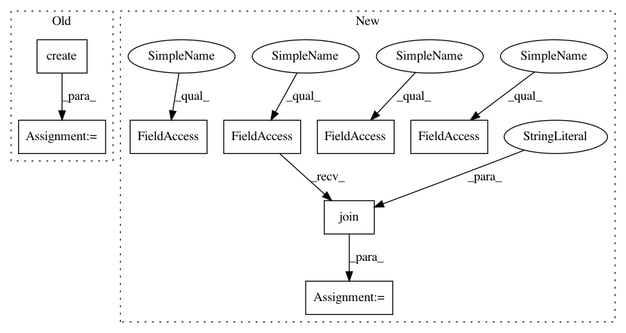

f2823cc5ad25abbe33e76c3555b490fdfbd9c902,tests/test_dependencies.py,,test_gather_sources_and_dependencies,#,135
Before Change
assert isinstance(sources, set)
assert isinstance(deps, set)
assert main == Source.create("tests/dependency_example.py")
expected_sources = {
Source.create("tests/__init__.py"),
Source.create("tests/dependency_example.py"),
Source.create("tests/foo/__init__.py"),
Source.create("tests/foo/bar.py")
}
assert sources == expected_sources
assert PackageDependency.create(pytest) in deps
assert PackageDependency.create(mock) in deps
After Change
assert isinstance(sources, set)
assert isinstance(deps, set)
assert main == Source.create(os.path.join(TEST_DIRECTORY, "dependency_example.py"))
expected_sources = {
Source.create(os.path.join(TEST_DIRECTORY, "__init__.py")),
Source.create(os.path.join(TEST_DIRECTORY, "dependency_example.py")),
Source.create(os.path.join(TEST_DIRECTORY, "foo", "__init__.py")),
Source.create(os.path.join(TEST_DIRECTORY, "foo", "bar.py"))
}
assert sources == expected_sources
assert PackageDependency.create(pytest) in deps
assert PackageDependency.create(mock) in deps
In pattern: SUPERPATTERN
Frequency: 3
Non-data size: 8
Instances
Project Name: IDSIA/sacred
Commit Name: f2823cc5ad25abbe33e76c3555b490fdfbd9c902
Time: 2019-07-03
Author: r.sjogren89@gmail.com
File Name: tests/test_dependencies.py
Class Name:
Method Name: test_gather_sources_and_dependencies
Project Name: IDSIA/sacred
Commit Name: f2823cc5ad25abbe33e76c3555b490fdfbd9c902
Time: 2019-07-03
Author: r.sjogren89@gmail.com
File Name: tests/test_dependencies.py
Class Name:
Method Name: test_custom_base_dir
Project Name: IDSIA/sacred
Commit Name: f2823cc5ad25abbe33e76c3555b490fdfbd9c902
Time: 2019-07-03
Author: r.sjogren89@gmail.com
File Name: tests/test_dependencies.py
Class Name:
Method Name: test_gather_sources_and_dependencies
Project Name: pantsbuild/pants
Commit Name: 6387414414ae171c038c5f59c2dbe2cb805b94c8
Time: 2016-05-15
Author: john.sirois@gmail.com
File Name: contrib/go/tests/python/pants_test/contrib/go/tasks/test_go_thrift_gen_integration.py
Class Name: GoThriftGenIntegrationTest
Method Name: test_go_thrift_gen_simple